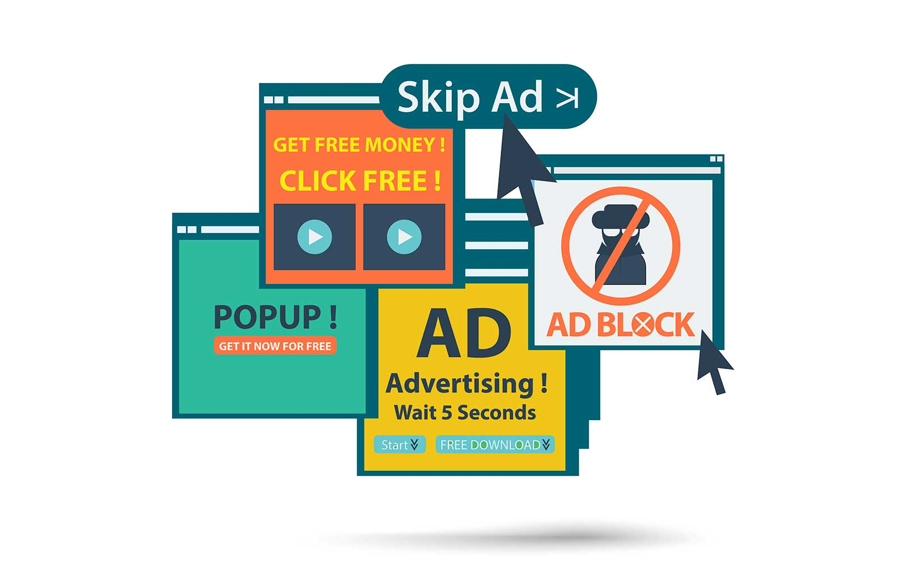
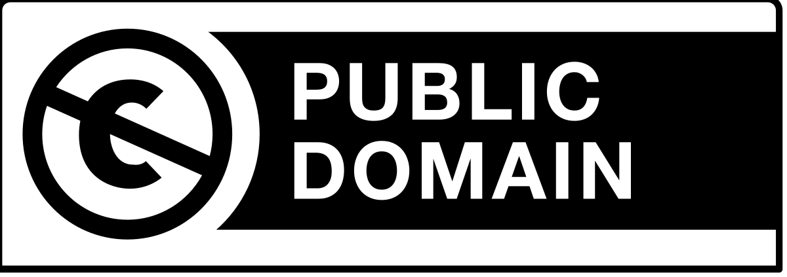
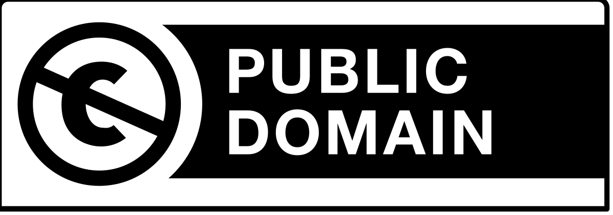
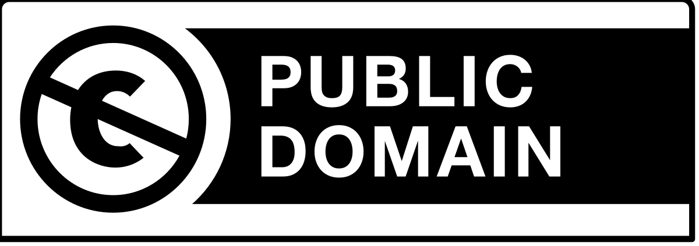
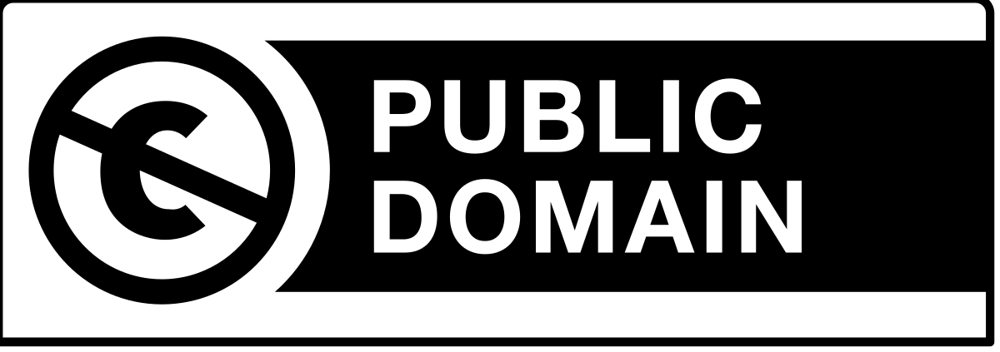

Ro캜n칤kov칳 projekt
Software
Gymn치zium 컇udov칤ta 맚칰ra v Tren캜칤ne
1. m치ja 2
911 35 Tren캜칤n

 





Ro캜n칤kov칳 projekt
Software
Gymn치zium 컇udov칤ta 맚칰ra v Tren캜칤ne
1. m치ja 2
911 35 Tren캜칤n

Adware alebo reklamn칳 softv칠r je ak칳ko쭀ek softv칠r, ktor칳 automaticky zobrazuje, prehr치va alebo s콘ahuje reklamn칳 materi치l na po캜칤ta캜i po svojej in코tal치cii alebo pri pou쮂셨an칤 tohto softv칠ru. Reklamy v t칳chto programoch sl칰쬴a niekedy na pokrytie n치kladov na tvorbu programu, a v캞aka nim je mo쬹칠, aby program bol dostupn칳 zadarmo. Adware sa 캜asto zamie켿a so spyware, ale je pravda, 쬰 mno쬽tvo reklamn칳ch programov neobsahuje reklamy iba na podporu autorov, ale aj sleduje 캜innos콘 pou쮂셨ate쬬 bez jeho vedomia. S치m o sebe v칛캜sinou b칳va ne코kodn칳, ale m칪쬰 odkazova콘 na phishingov칠 str치nky alebo str치nky 코칤riace malware. 캛asto tie do zariadenia s콘ahuje 캞al코칤 reklamn칳 obsah, v hor코칤ch pr칤padoch dok치쬰 zmeni콘 nastavenia predvolenej str치nky v internetovom prehliada캜i, alebo priamo zmeni콘 predvolen칳 prehliada캜.
Shareware je sp칪sob distrib칰cie softv칠ru, ktor칳 umo쮄갓je program bezplatne vysk칰코a콘 alebo pou쮂셨a콘 po obmedzen칰 dobu. Po vypr코an칤 tejto doby je pou쮂셨ate povinn칳 zaplati콘 po쬬dovan칰 cenu programu alebo program odin코talova콘. Sp칪sob vo쬹칠ho 코칤renia programov formou shareware volia predov코etk칳m za캜칤naj칰ce firmy, ktor칠 si nem칪쬿 dovoli콘 investova콘 do n치kladnej distrib칰cie v predajnej sieti. My코lienka je zalo쬰n치 na tom, 쬰 ak je produkt skuto캜ne dobr칳, 코칤ri sa dobre s치m. Neregistrovan칳 program b칳va oproti zaplatenej k칩pii 캜asto funk캜ne obmedzen칳, 캜asovo limitovan칳, alebo inak upraven칳. Niekedy sa autori uspokoja len s informa캜n칳m 칰vodn칳m dial칩gom alebo napr. s odpo캜칤tavan칤m, ktor칠 dok치쬰 pou쮂셨anie neregistrovan칠ho produktu skuto캜ne ve쬸i znepr칤jemni콘. Shareware distrib칰ciou, na rozdiel od pir치tskych k칩pi칤, pon칰kaj칰 autori z치kazn칤kom mo쬹os콘 vysk칰코a콘 program a jeho mo쬹osti celkom neviazane a hlavne leg치lne na vlastnom po캜칤ta캜i. Je v코ak potrebn칠 ma콘 na pam칛ti, 쬰 pou쮂셨anie programu po stanovenej lehote alebo za in칳ch podmienok je prakticky toto쬹칠 s prev치dzan칤m pir치tskej k칩pie. Programy v칛캜코inou po sk칰코obnej dobe neukon캜ia svoju 캜innos콘, ale napr칤klad len zintenz칤vnia naliehanie na registr치ciu k칩pie, od ktor칠ho si nepom칪쬰te ani novou in코tal치ciou.